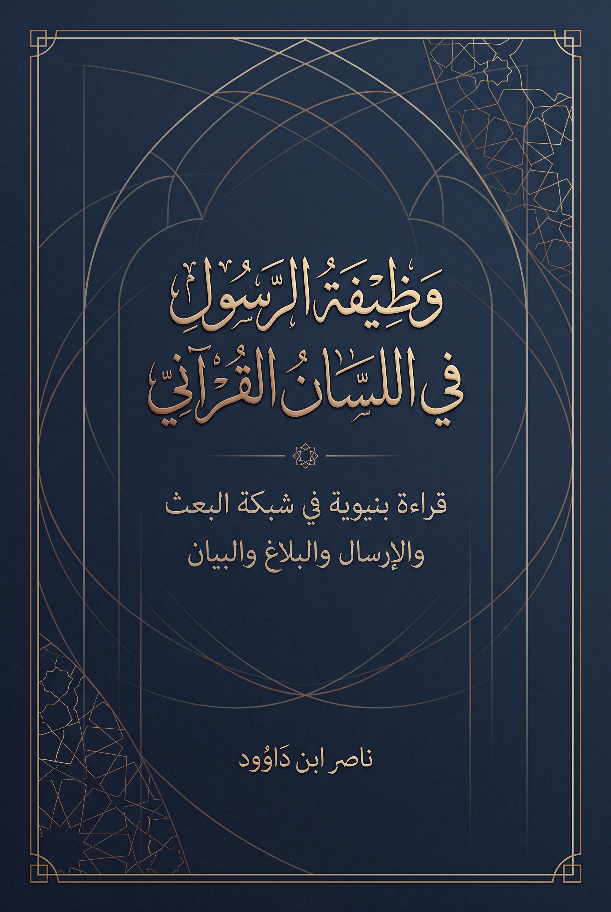

120. وظيفة الرسول في اللسان القرآني — قراءة بنيوية في شبكة البعث والإرسال والبلاغ والبيان

دراسة لشبكة وظائف الرسول والتمييز بين البعث والإرسال والبلاغ والبيان، تقترح إطارًا لفحص الأخبار ونطاق الإلزام، مع فصل الشاهد القرآني عن استنباط الباحث ونموذجه التشغيلي. الإنجليزية تكييف مفاهيمي مختصر.
النسخة الإنجليزية مختصرة ومفاهيمية، وليست ترجمة حرفية كاملة؛ يبقى النص العربي المرجع الأساسي للتفصيل والإحالات.
قراءة PDF داخل الموقع / Read the PDF on this website
جارٍ تجهيز القارئ… / Preparing the reader…
ملخص الكتاب وفهرسه الموضوعي (مقتطف نصي للفهرسة والبحث)
وظيفة الرسول في اللسان القرآني
قراءة بنيوية في شبكة البعث والإرسال والبلاغ والبيان
ناصر ابن داوود
12 أكتوبر 2026
ملاحظة العنوان
يصف عنوان الكتاب موضوع البحث وطريقة النظر فيه، ولا يفترض حسم الجدل قبل عرض الشواهد. ويُقرأ التمييز البنيوي المقترح بوصفه سؤالًا للتحليل والاختبار، لا تصنيفًا مسبقًا للمتناظرين.
1 ملخص الكتاب للقارئ غير المتخصص
1.1 سؤال الكتاب وما الذي يقدمه
حين ينسب خبرٌ إلى الرسول، تتداخل في مناقشته أسئلة مختلفة: هل ثبت أنه قاله أو فعله؟ وماذا يعني في سياقه؟ وهل يتصل بالبلاغ أو التعليم أو القضاء أو غيرها من الوظائف؟ وهل يتعلق حكمه بواقعة معينة أم يتجاوزها؟ وقد يحدث الخلاف لأن المتناقشين يجيبون عن أسئلة مختلفة دون أن يصرحوا بذلك.
يبدأ الكتاب من السؤال القرآني عن الوظيفة: ما الذي يسنده القرآن إلى الرسول، وكيف تنتظم مفردات البعث والإرسال والتلاوة والبلاغ والتعليم والتزكية والبيان والحكم والشهادة؟ ثم يبحث حدود الاستفادة من هذه الشبكة في فحص الأخبار التاريخية. واختيار القرآن مرجعًا أعلى في البحث لا يجعل كل تفسير للمؤلف حكمًا قرآنيًا؛ بل يوجب عليه إظهار الآية والسياق والمقدمات التي بنى عليها قراءته.
ولا تختزل المواقف من الروايات في فريقين متجانسين؛ فبين القبول والرد مناهج متعددة في نقد الأسانيد والمتون وفهم الدلالات والنسخ والتخصيص. يعالج الكتاب بعض المشكلات التي تنشأ من قبول الخبر أو رفضه دون تحرير كافٍ، ويقترح طريقة لإظهار خطوات الحكم بحيث يمكن مناقشتها وتصحيحها.
1.1 الجواب المركزي في عبارة واضحة
لا يكفي اسم الوظيفة أو اختلاف اللقب للحكم على الخبر. تعيين الوظيفة يحتاج إلى شواهدها، وإثبات الخبر يحتاج إلى طرقه، وفهمه يحتاج إلى سياقه، وتحديد إلزامه يحتاج إلى قرائن نطاقه. لذلك لا تنشأ من اختلاف «النبي» و«الرسول» قسمة جاهزة تجعل جميع التصرفات المنقولة ملزمة أو غير ملزمة قبل فحصها.
1.2 رحلة الأبواب الأربعة
جدول 1 — رحلة الأبواب الأربعة
الباب
السؤال الذي يعالجه
ما يقدمه للقارئ
الحد الذي لا يتجاوزه
شبكة البعث والإرسال
ماذا تكشف الأبنية والمفاعيل والسياقات عن استعمال الجذرين؟
فهرس بعث بـ67 وقوعًا، وسجل ر–س–ل بـ513 وقوعًا، مع التصنيف ومواضع التعليق
لا يثبت العدّ وحده فرقًا معجميًا مانعًا أو غلبة دلالية لم تُقَس بمعيار متجانس
مصفوفة وظائف الرسول
كيف تتصل أفعال المهمة بعضها ببعض، وكيف تُقرأ صيغ الحصر؟
ستة محاور تحليلية لتنظيم الشواهد، وفحصًا لاتصال البلاغ بالطاعة وتوزيع المسؤولية
المحاور تقسيم الباحث، وليست قائمة قرآنية مغلقة؛ ونفي الإكراه يحتاج إلى شواهده المستقلة
النبي والرسول ومقام الحمد
كيف يجتمع الوصفان، وما أثر النداء والسياق في فهم الخطاب؟
مقارنة نحوية وسياقية، ومراجعة لشبكات الطاعة والعتاب والحمد والصلاة
لا يثبت فصلًا بين شخصين أو سلطتين، ولا يحسم توزيع العصمة بمجرد اللقب
من وظيفة النص إلى ميزان الرواية
كيف تُفحص الوقائع المنقولة دون أن تملي الفرضية نتيجتها؟
بطاقة خماسية تطبق أوليًا على الصلاة والتأبير والخصومة والوصية
لا يكتمل بها تخريج الأخبار، ولا تثبت صلاحية الأداة لجميع الحالات بمجرد تطبيقها أربع مرات
وخاتمة الكتاب تجمع هذه النتائج بحسب مرتبتها، وتعيد وصل التحليل اللغوي بالسؤال عن الخبر والإلزام. وهي موضع مناسب لفهم الحصيلة، مع الرجوع إلى الأبواب لتقييم أدلتها.
1.3 ثلاثة فروق تحفظها أثناء القراءة
اكتمال الفهرس يختلف عن اكتمال تفسيره: قد تكون وحدات الوقوع كلها مسجلة، وتبقى بعض مراجعها أو وظائفها أو أوسمتها قابلة للمراجعة.
وظيفة الرسول تختلف عن ثبوت ما ينسب إليه: إثبات التعليم أو الحكم في القرآن لا يثبت تلقائيًا صحة كل خبر تعليمي أو قضائي.